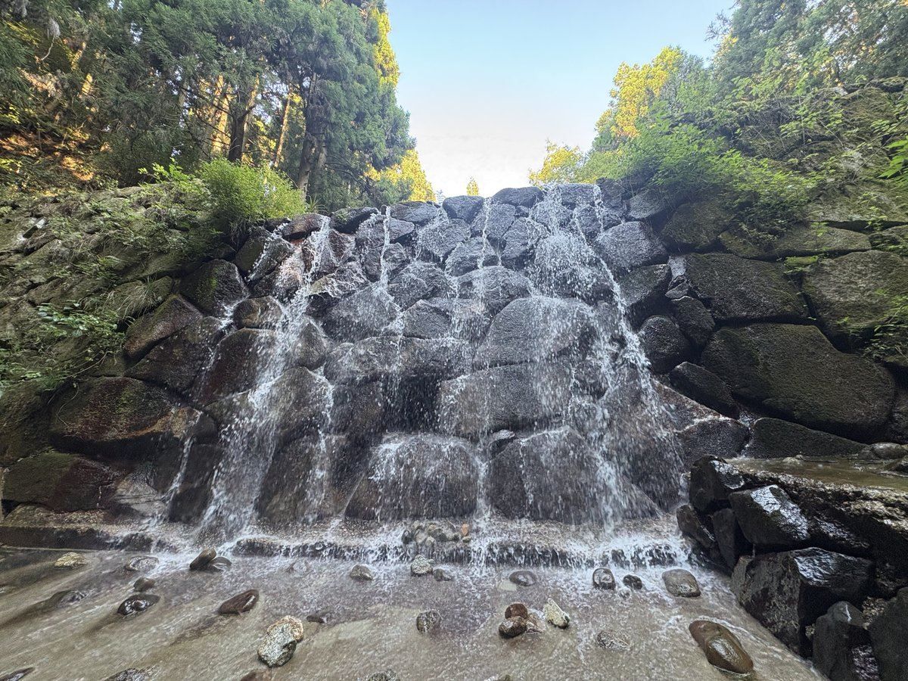

水越川
大阪府南河内郡千早赤阪村大字水分
駐車場
あり（無料）
トイレ
なし
ドッグラン
なし
入場料
無料
備考・犬連れでのポイント
金剛山の登山口にもなっている水越峠付近の渓流。水越川公共駐車場が起点で、川も駐車場も無料。
杉林に囲まれた沢沿いを歩く形で、真夏でも涼しい。水深は数cm〜大人の足首ほどで、深い場所でも30cm程度。
流れが穏やかで透明度が高く、泳ぐというより浅瀬を歩く深さのため小型犬でも入りやすい。
管理者のいない自然の川で犬種やサイズの制限はなく、リード着用とフンの持ち帰りが前提。
ドッグランはなし。標高が高く水温はかなり冷たいため、犬を長時間入れる場合は体の冷えに注意。
駐車場は中流側と上流側の2か所で合わせて30〜40台程度だが、登山口を兼ねるため休日は早朝から満車になりやすい。
村の規定で18:00〜翌6:00は利用禁止。駐車場にトイレはなく、最寄りは旧国道309号の分岐付近にある水越峠公衆トイレ（車で2分程度）。
水辺の広場の入口は老朽化のため閉鎖中で再開未定。ゴミ箱がないため持ち帰りのこと。
石積みの砂防堰堤があり水が階段状に流れ落ちる。ゲリラ豪雨時は急な増水の危険。
アクセス路は道幅が狭く対向車とすれ違えない区間あり。駐車場の現地看板に焚き火・花火・バーベキュー等の火の使用をしないことと明記。